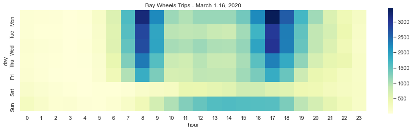

Recommending Street Closures for Social Distancing Using Bike Share Trip Data
May 8, 2020
Introduction
Due to the ongoing circumstances regarding COVID-19 Bay Area jurisdictions and state of California have mandated residents shelter-in-place. For those that go outside it is recommended that people follow social distancing guidelines that suggest people remain 6 feet away from each other to avoid further spread of the novel coronavirus. However, this can often be difficult in many built environments where the space allocated to vehicles dwarfs the width of the sidewalk.
To encourage social distancing many cities around the world have converted road space from automotive traffic to pedestrians and bicyclists. Although many of these are just temporary closures, the increased space for non-vehicular travel is allowing residents to get exercise, fresh air, and access still-open essential buildings in a more sustainable way.
The City of Oakland has been receptive to these needs and recently identified 74 miles of streets to be cordoned off for non-automotive travel in their Slow Streets Project. Despite the decrease in vehicular travel and the need for increased sidewalk space not all cities in the Bay area are following suit. Notably, Berkeley has balked at a petition to repurpose Berkeley’s bicycle boulevards similar to what Oakland has done. San Francisco did recently close some streets to through-traffic, however it is unclear whether they plan to do more nor how they identified what streets to close.
This project builds on the need for additional street closures to create safe streets in the Bay Area during the pandemic. I use open-source bike share data from Bay Wheels to identify the most frequented biking paths by system users. Together with maps of existing and planned bicycle facilities these routes can serve as recommendations for jurisdictions in the Bay Area that are looking to close streets to vehicular traffic to promote social distancing.Project Code:
Datasets used:
- System data from Bay Wheels
- Regional bicycle facilities in the Bay Area from the Metropolitan Transportation Commission
- Tract-level boundaries and data for California from the 2018 5-year ACS
Trip Patterns Before and during the pandemic
On March 16, 2020 multiple Bay Area jurisdictions (including all regions serviced by Bay Wheels) ordered residents to shelter-in-place. Starting the next day all non-essential workers were required to stay home, drastically impacting trip patterns.
This heatmap of bike share trips between March 1-16 displays distinct trip patterns. During weekdays people are most frequently using Bay Wheels for travel between 8am-9am and 5pm-6pm. These trips represent period travel for work. They are likely first-last mile connections between people's home or office and public transit because the most frequented bike share stations are at BART or Caltrain stations. There are also trips made during weekdays outside of these times, but not to the same magnitude. Such trips may not be for commuting purposes.
On the weekend the morning/evening commute peaks disappear. Instead, people are using Bay Wheels bikes for trips during the middle of the day. These are likely leisure or errand trips for people moving around on the weekend. They do not occur with the same magnitude as weekday peak period trips. Regardless of the day of the week Bay Wheels is not often used in the evening, possibly because people do not feel safe biking at night.
The shelter-in-place order, not surprisingly, had a massive impact on travel behavior. One noticeable change is that the quantity of trips taken is much lower than the first half of the month. Additionally, between March 17-31 the morning and evening peaks commutes have disappeared from weekday trips. It even appears that people may be waking up later because trips don't start occuring in mass until noon most days. Now, the majority of trips appear to be on the weekends, likely when people working from home during the week are off and can get outside for some (socially-distanced) exercise.
Because the March data is not representative of typical bike share travel behavior, the following analyses use the previous complete month of data from February 2020. The shelter-in-place order did not exist in February and the weather was typical of the Bay Area (if not more arid than normal) making it a reasonable proxy for typical trips.
Identifying Frequent Bicycle Routes
The first step was to process the raw data that comes from Bay Wheels. Possibly erroneous trips (i.e. trips that are too long, time-wise) and illogical trip (i.e. trips that are too long, distance-wise) are removed. Then the dataset was shortened to only include unique origin-destination pairs, with counts for each one (i.e. 15 trips between origin A and destination B).
The OSMnx package (Boeing, 2017) was used on the cleaned data to then calculate the shortest route between each origin-destination pair. Below is sample code and map that use the OSMnx package to generate a street network with the OpenStreetMaps API and query the path between two nodes.
 Example of OSMnx Shortest Path Method
Example of OSMnx Shortest Path Method
The goal is to identify the streets Bay Wheels riders frequent the most. The images below display this process. Geospatial methods (gpd.geometry.unary_union, gpd.tools.jsoin) were applied to the routes queried using OSMnx (left image) to create a dataset with only unique segments (right image).
This processed dataset of segments was then intersected with the paths from all Bay Wheels routes to output counts of trips over each segment. This layer and the locations of bicycle facilities in the Bay Area are displayed below in an interactive map. Pan and zoom around San Francisco, Berkeley/Oakland, and San Jose to see where Bay Wheels users frequently travel.
Street Closure Recommendations
Using the map above, along with data on the population density per tract (from the Census) I recommend that the following streets be closed to through-traffic to improve social distancing in the Bay Area:
- San Francisco:
- Hayes St (Divisadero - Van Ness)
- 11th St (Market - Bryant)
- 17th St (Church - Pennsylvannia)
- Polk St (Chestnut - Ellis)
- Hyde St (Bush - McAllister)
- Rhode Island St (17th - 23rd)
- 23rd (Guerrero - Rhode Island)
- Clayton St (Oak - Carl)
- Folsom St (11th - 17th)
- Washington ST (Drumm - Grant)
- Sanchez St (17th - Duboce)
- Sutter St (Scott - Kearny)
- 2nd Ave (Lake - Fulton)
- 8th St (Lake - Fulton)
- Jersey St (Douglass - Church)
- 19th St (Diamond - Church)
- Joose Ave (Genessee - Acadia)
- Chestnut St (Fillmore - Polk)
- Berkeley:
- 7th St (Channing - Addison)
- Addision St (2nd - 9th)
- Virginia St (5th - San Pablo)
- Vine St (Bonita - Walnut)
- 9th St (Ashby - Channing)
- McGee Ave (Carlton - Hearst)
- Hollis St (Powell - 40th)
- Derby St (San Pablo - Sacramento)
- Carlton St (Sacramento - Fulton)
- Hillegras Ave (Dwight - 62nd)
- Shafter Ave (Forest - 42nd)
- Milivia St (Stuart - Allston)
- Fulton St (Carlton - Prince)
These streets are displayed in red below. The blue dots indicate bike share stations in the Bay Wheels system and the yellow lines are already closed streets in San Francisco (the streets closed in Oakland are currently being digitized and will be added to the map below when complete).
Next Steps
There are some important considerations to note in these recommendations. Only trips from February 2020 were analyzed. That month of travel may not be representative of the entire Bay Wheels system. However, it was the last full month of non-shelter-in-place data and has the most recent selection of active bike share stations. Additionally, as mentioned above, many of the bike share trips are taken for commuting purposes. Removing circuitous trips may have furthered this skew. It is unclear whether trip purpose has an impact on route. It is also likely that many street closures to promote social distancing do not need to be in downtown business districts, but in urban neighborhoods with families looking to get exercise or high percentages of essential workers.
This project is lacking an analysis of sociodemographic data. It would be helpful to overlay all these trips on data the Census (race and ethniciy, children under 18 per household, elderly population, frequent bicycle commuters) to ensure the populations that can access these street closures are representative of the population. It is also important to note that the majority of Bay Wheels members are male. Do men have different trip patterns than women? For example, are they more comfortable riding at night? This was not explored in this analysis and further studies should consider this information.
Another goal is to overlaying these routes on locations with essential workers. Job information (NAICS codes) from the LEHD can be used to identify essential industries and the tracts where these workers live. These people are the most vulnerable during the pandemic because they are not sheltering-in-place and would benefit from increased space to avoid the spread of the novel coronavirus.
Lastly, an exciting part of this project is that Motivate, the parent company of the Bay Wheels bike share system, operates docked bike share in other cities in the US (New York, Boston, Chicago, Minneapolis, etc.). They standardize their monthly trip data, so code created for this project should be able to process trip data from other locations.
References
“AC Transit Service Bulletins.” http://www.actransit.org/servicebulletins/. Accessed Apr. 13, 2020.
Boeing, G. "OSMnx: New Methods for Acquiring, Constructing, Analyzing, and Visualizing Complex Street Networks." Computers, Environment and Urban Systems 65 (2017), pp. 126-139.
Dowd, Katie. "San Francisco is closing these streets to help with social distancing." SF Gate, Apr. 21, 2020. https://www.sfgate.com/bayarea/article/San-Francisco-is-closing-slow-streets-15215512.php.
Laker, Laura. “World cities turn their streets over to walkers and cyclists.” The Guardian, Apr. 11, 2020. https://www.theguardian.com/world/2020/apr/11/world-cities-turn-their-streets-over-to-walkers-and-cyclists.
"Oakland Slow Streets." City of Oakland. Accessed Apr. 24, 2020. https://www.oaklandca.gov/projects/oakland-slow-streets
Rudick, Roger. “People Desperate for Space, but so far Bay Area Won’t Open Streets.” Streetsblog, Mar. 30, 2020. https://sf.streetsblog.org/2020/03/30/people-desperate-for-space-but-so-far-bay-area-officials-wont-open-streets/.
Rudick, Roger. “Oakland to Open 74 Miles of Streets for Walkers and Cyclists.” Streetsblog, Apr. 10, 2020. https://sf.streetsblog.org/2020/04/10/oakland-to-open-74-miles-of-streets-for-safe-biking-and-recreation/.
“System Data.” Lyft. Accessed Apr 10., 2020. https://www.lyft.com/bikes/bay-wheels/system-data.
Walk Bike Berkeley. “Letter requesting closure of streets for social distancing & COVID-19.”Accessed Apr. 13, 2020. https://docs.google.com/document/u/1/d/e/2PACX-1vQQkbtEb3s0bfUMcLUMeu1Oa4OWnmxK9hsRLIRfw3PznZYCsc7kpUZ9pjpHS1La9PWUswL7q9LGVG7q/pub.